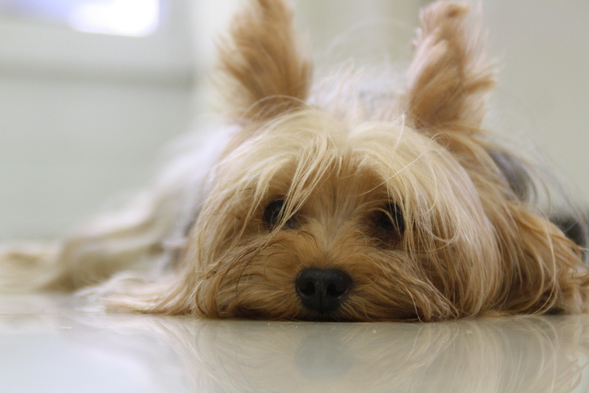
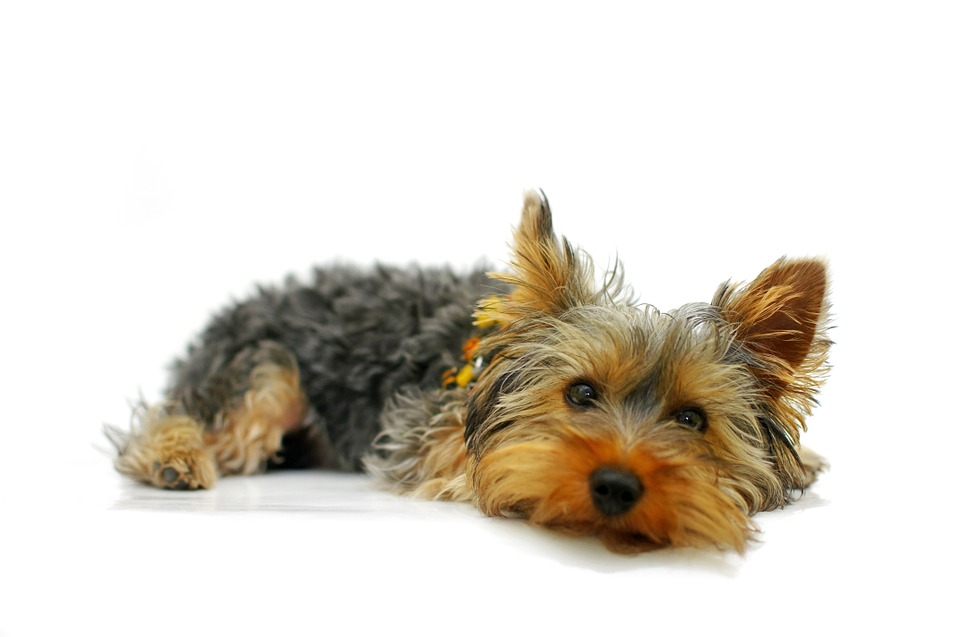
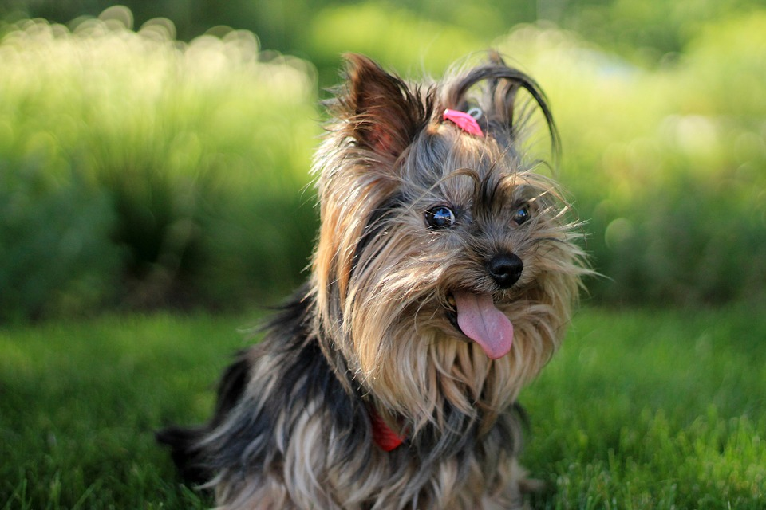
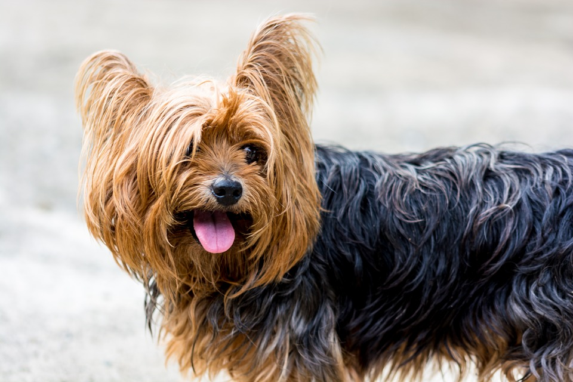
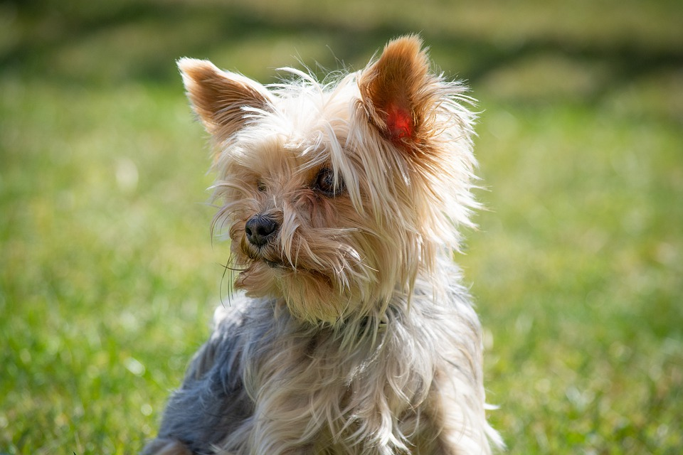
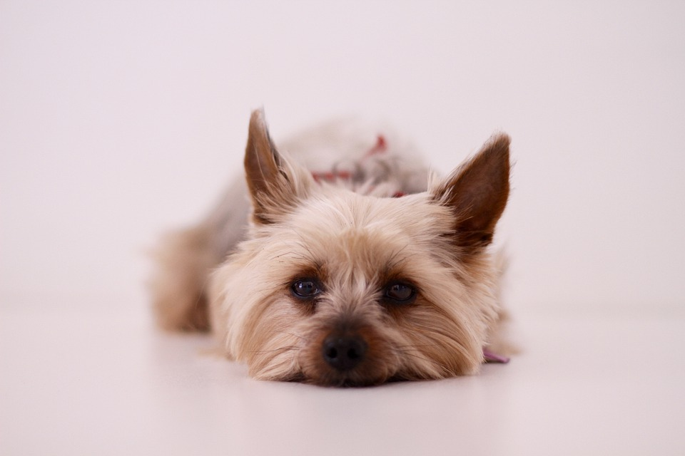

Йоркширский Терьер - порода собак.
Йоркширский терьер, или йорк (англ. yorkshire terrier), — порода декоративных собак, выведенная в Англии, в графстве Йоркшир в конце XIX века, на основе таких пород как манчестер-терьер, скайтерьер, мальтезе и др.
  Происхождение породы.
Родиной йоркширского терьера являются графства Йоркшир и Ланкашир в северной Англии. Его возможным предком называют уотерсайдского терьера. Эта порода была популярна в XVIII—XIX веках в Йоркшире и описывалась как «маленькая, серо-голубая собака с полудлинной шерстью». Этих собак держали крестьяне, так как им было запрещено заводить больших собак, чтобы они не браконьерствовали на землях, принадлежавших знати. Небольшие собачки охраняли дома от грызунов и сопровождали своих хозяев в торговых поездках вдоль рек и каналов (отсюда и название).
Шанс чего-то
| Вес при рождении | 80г | 115г | 160г |
| 1 месяц | 230г | 370г | 595г |
| 2 месяц | 370г | 610г | 940г |
| 3 месяц | 540г | 850г | 1280г |
| Разновидность | супер мини | мини | стандарт |
Характер породы.
Несмотря на миниатюрность, йоркширские терьеры сохраняют качества, присущие терьерам больших размеров — смелость, любопытство, неутомимость. Он доброжелателен и с людьми, и с другими собаками и предан хозяину.
Йоркширские терьеры больше чем собаки какой-либо другой породы нуждаются во внимании. Йоркширские терьеры готовы весь день проводить рядом с хозяином — на руках или следуя за ним по пятам. Они с удовольствием бегают, прыгают, играют в мяч, «охотятся» на птиц, мышей или солнечных зайчиков, при этом не забывая следить за реакцией хозяина. Йоркширские терьеры настойчиво добиваются своего, будь то внимание хозяина или порция еды. Йорк хорошо чувствует настроение хозяина и подстраивается под него.
  